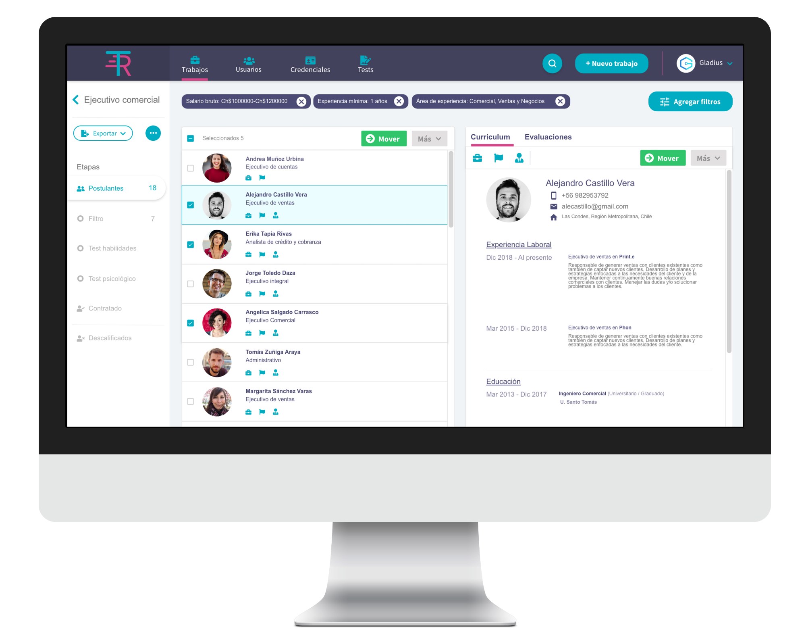
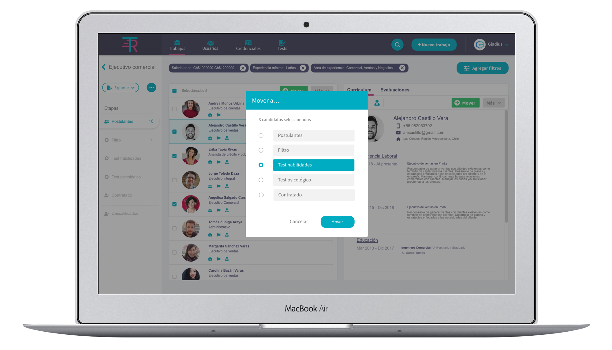

El desafío fue diseñar una plataforma que automatizara el proceso de selección de personal en las empresas.
Para llegar a la solución fue necesario entrevistar a profesionales que trabajan en recursos humanos para conocer sus problematicas durante el proceso de reclutamiento de personal, posterior a esto se realizó un benchmark para conocer las plataformas que existen actualmente en el mercado y con ello sacar lo mejor de cada una. Finalmente se realizaron sketch, los que se convirtieron en wireframes de alta fidelidad.
Se diseña una sitio web que publica las ofertas en diversos portales de empleo chilenos. Luego, recolecta los CVs de todos los postulantes, los cuales deben pasar por diferentes filtros creados por los propio usuarios. A partir de la información recolectada recomienda al mejor candidato para el cargo.